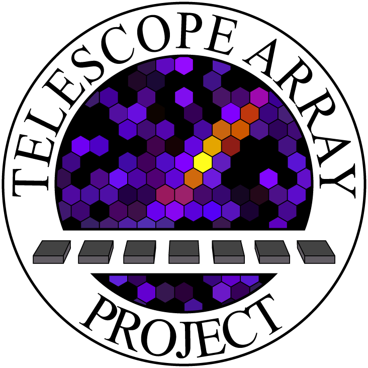

Resume, Curriculum Vitae, etc.
Research Experience
Cosmic ray Research --
Fall 2015 - Present

Telescope Array Cosmic Ray Observatory
University of Utah, Department of Physics and Astronomy
Research Advisor: Charlies Jui
Thesis: Ultra High Energy Cosmic Ray Energy Spectrum using Hybrid Analysis with TAx4
Thesis Defense Slides: pptx, pdf
- Analyzed the data for the new TA expansion, TAx4, to calculate the energy spectrum of ultra-high energy cosmic rays using hybrid detection.
- Maintained and operated surface and fuorescence detectors for cosmic ray data collection.
- Linux systems administrator of the Telescope Array's data server and computational cluster at the University of Utah.
- Analyzed fluorescence detector’s sensitivity to energy and development of cosmic ray interactions in the atmosphere through Monte Carlo simulation. The reconstructed information was analyzed by binning parameters into histograms and fitted using CERN's ROOT data analysis framework.
Accelerator Research --
Fall 2015 - Present
sFLASH Collaboration
Stanford Linear Accelerator Center, National Accelerator Labortory
Proceedings/Publications: Instruments of sFLASH, paper
- Performed two experiments in 2016 and 2018 aimed at measuring the air flouresecne yeild at Stanford Linear Accellerator Center. The air flourescence yeild is a important quantity in determining how much light is produced in cosmic ray air showers.
- Performed photo-multipler tube calibration with a UV LED diode.
- I assisted in taking the data when the beam was running and was in charge of keeping an experimental log of each data run.
- Analyzed beam run data to find 'golden runs', runs where the beam energy was stable.
Astronomy Research --
Fall 2014 - Spring 2015
Salt Lake Community College, Salt Lake City, Utah
Research Advisor: Jonathan Barnes
Senior Project: A Closer Look at the KOI-22 Light Curve
- Examined the Kepler exoplanet data to see if we could find evidence of precession in the light curves of "Hot Jupiter" systems that could hint at additional exoplanets.
- Found a trend in the difference of the orbital times of KOI-22 which repeated every sixty-two orbits. This may suggest that a body is perturbing its orbit slightly.
Publications
- M.Potts and C. Jui (TA Collaboration). Monocular Energy Spectrum using the TAx4 Fluorescence Detector. Proceedings of Science (ICRC2021) 343.
- R.U. Abbasi et al. (TA Collaboration). Surface detectors of the TAx4 experiment. Nuclear Inst. and Methods in Physics Research (2021).
- R.U. Abbasi et al. (TA Collaboration). Observations of the Origin of Downward Terrestrial Gamma-Ray Flashes. Journal of Geophysical Research: Atmospheres 123 (2018).
- S. Atwood et al. (sFLASH Collaboration). Air fluorescence yield measurement at SLAC National Laboratory: sFLASH experiment. To be published in the Physical Review Letters pending our results from our analysis of the data gathered at SLAC.
- S. Atwood et al. (sFLASH Collaboration). The Instruments of sFLASH experiment. Proceeding of Science (ICRC2017) 407.
Conferences/Talks
- M. Potts on behalf of TA. Monocular Energy Spectrum using the TAx4 Fluorescence Detector. International Cosmic Ray Conference, Berlin, Germany, July 2021.
- M. Potts on behalf of TA. TAx4 Cosmic Ray Energy Spectrum (Poster). Physics and Astronomy Research Symposium, University of Utah, Salt Lake City, UT, April 2020.
- M.Potts and Jonathan Barnes. A Closer Look at the KOI-22 Light Curve. Research Symposium, Salt Lake Community College, Salt Lake City, UT, 2015
- M. Potts and Jonathan Barnes. A Closer Look at the KOI-22 Light Curve. Salt Lake Astronomical Society Meeting, Salt Lake City, UT, 2015